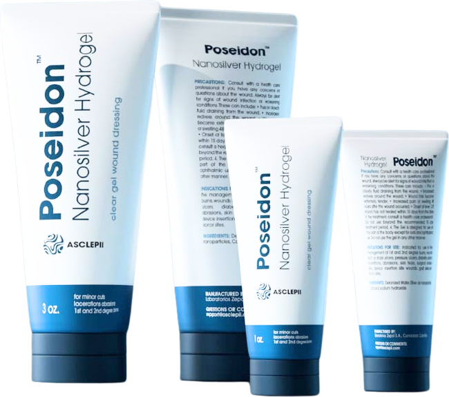
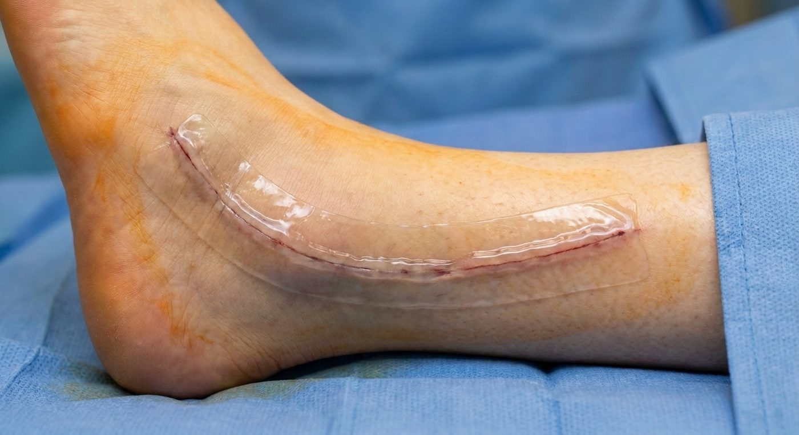
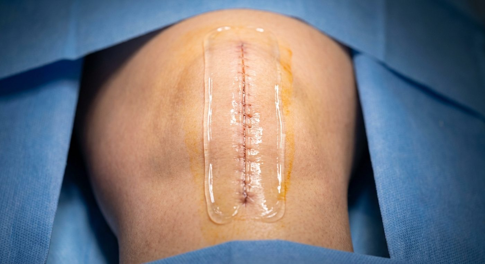

Poseidon
A clear nanosilver hydrogel wound dressing. Antimicrobial management at one part per million silver, with no antibiotic and only four ingredients.

silver, against 30 to 10,000 ppm in typical silver dressings.
ingredients. No antibiotic, so no resistance to build.
organism classes covered: MRSA, Pseudomonas and Candida.
Cleveland companies serving wound care patients in Northeast Ohio.
Poseidon™ Nanosilver Hydrogel
Stable wound environment
Supports moisture balance, temperature continuity and wound hygiene.
Nanosilver at very low dose
Consistent antimicrobial management at one part per million.
Clear gel
The wound stays visible through the dressing.
Fits standard workflows
A modern alternative to high-silver dressings, with no added complexity.


Where it serves.
“Biofilm is something we find very challenging. … Poseidon fits very nicely into this area to help these wounds heal quicker.”
Megan Oltmann, DPM, FACFASHead of Podiatric Surgery and Wound Care, University Hospitals Cleveland Medical Center
- Ulcers. Pressure ulcers, venous leg ulcers and diabetic foot ulcers.
- Surgical. Surgical incisions, graft and donor sites.
- Burns. First- and second-degree burns.
- Trauma. Partial- and full-thickness traumatic wounds.
Bring Poseidon to your next case.
Lotus Medical brings the technology, the clinical data and the support into the room, for every case.